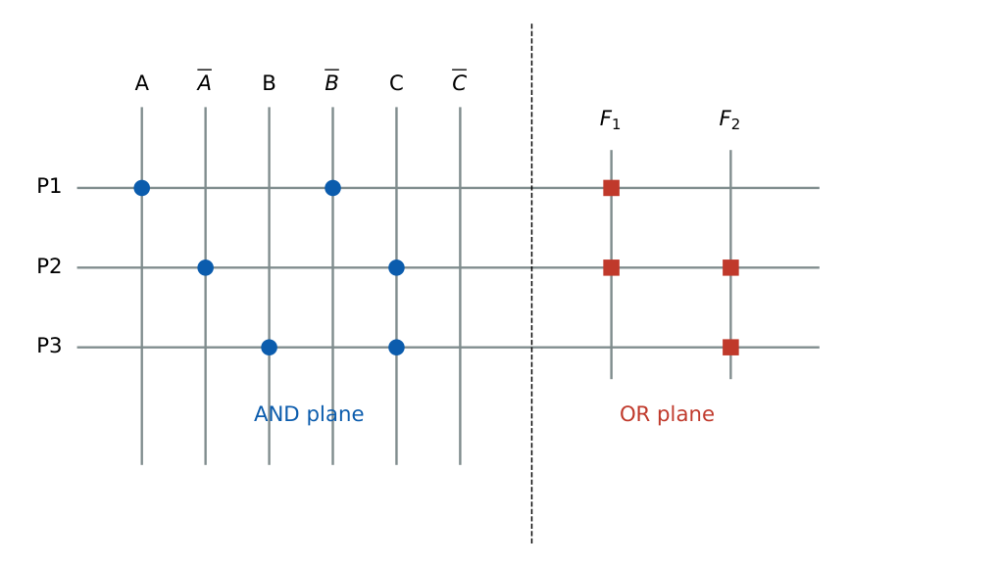

Memories and Programmable Logic Devices
In this chapter
Address and data line counts, memory expansion arithmetic, ROM as a look-up table, PLA/PAL structure and fuse counts, LUT-based FPGAs, DRAM refresh overhead, SRAM versus DRAM.
12.1 Memory fundamentals
A memory with \(2^k\) locations each \(m\) bits wide has \(k\) address lines, \(m\) data lines and capacity \(2^k\times m\) bits. Typical control lines: chip select (\(\overline{CS}\)), read/write (\(R/\overline W\)) and output enable (\(\overline{OE}\)).
\(1\,\text{K}=2^{10}\), \(1\,\text{M}=2^{20}\), \(1\,\text{G}=2^{30}\).
Address lines for \(N\) words: \(\lceil\log_2N\rceil\). Total bits \(=N\times m\).
Memory-expansion: from chips of \(N_c\times m_c\) to a memory \(N\times m\) one needs \(\dfrac N{N_c}\times\dfrac m{m_c}\) chips (word-width expansion in parallel, depth expansion with a decoder on the high address bits).
12.1.1 Address decoding
A \(16\)K-byte chip has 14 address lines \(A_{13}\dots A_0\) and occupies a block of \(4000_{16}\) addresses. In a 16-bit address space the top two bits \(A_{15}A_{14}\) select one of four blocks via a \(2{:}4\) decoder: block \(01\) covers \(4000_{16}\)–\(7FFF_{16}\). A \(32\)K-byte memory starting at \(8000_{16}\) spans \(8000_{16}\)–\(FFFF_{16}\).
12.2 Read-only memory
| Type | Programming |
|---|---|
| Mask ROM | at manufacture |
| PROM | once, by blowing fuses |
| EPROM | UV erase, electrical program |
| EEPROM | electrically erasable, byte-wise |
| Flash (NOR, NAND) | block erase; NOR gives random access, NAND high density |
Structurally a ROM is an address decoder (fixed AND array giving all \(2^n\) minterms) followed by a programmable OR array. Therefore a ROM with \(n\) address lines and \(m\) outputs implements \(m\) arbitrary functions of \(n\) variables: size \(2^n\times m\) bits.
Binary-to-Gray (4-bit): \(2^4\times4=64\) bits. 4-bit \(\times\) 4-bit multiplier: 8 inputs, 8 outputs: \(256\times8=2048\) bits. 3-bit adder with carry-in: 7 inputs, 4 outputs: \(128\times4=512\) bits.
12.3 Random-access memory
SRAM: a cell is a cross-coupled inverter pair with two access transistors (6T). It holds data as long as power is applied, needs no refresh, is fast and is used for caches and registers; density is low.
DRAM: a cell is one transistor and one capacitor (1T1C). The charge leaks and must be refreshed (typically every \(64\,\)ms for every row); reads are destructive (the sense amplifier restores the data). Row and column addresses share the same pins (multiplexed with RAS/CAS), halving the address-pin count.
| SRAM | DRAM | |
|---|---|---|
| Cell | 6 transistors | 1T + 1C |
| Refresh | none | required |
| Speed | faster | slower |
| Density / cost per bit | lower / higher | higher / lower |
| Use | cache, register file | main memory |
Refresh interval per row \(=\dfrac{t_{ret}}{N_{rows}}\). Fraction of time spent refreshing \(=\dfrac{N_{rows}\,t_{refresh}}{t_{ret}}\).
E.g. \(N_{rows}=8192\), \(t_{ret}=64\,\)ms \(\Rightarrow\) one row every \(7.8125\,\mu\)s; with \(50\,\)ns per refresh the overhead is \(\dfrac{8192\times50\text{ ns}}{64\text{ ms}}=0.64\%\).
Memory timing: access time is the delay from address valid to data valid; cycle time is the minimum time between successive operations (cycle \(\ge\) access for DRAM because of precharge/restore).
12.4 Programmable logic devices

| Device | AND array | OR array |
|---|---|---|
| PROM / ROM | fixed (full decoder) | programmable |
| PAL | programmable | fixed |
| PLA | programmable | programmable |
A PLA with \(n\) inputs, \(p\) product terms and \(m\) outputs has AND-array crosspoints \(2np\) (each input in true and complemented form) and OR-array crosspoints \(pm\). A PROM has \(2^n\) product terms, a fixed AND array, and \(2^nm\) programmable OR points.
\(n=4\), \(p=8\), \(m=3\): AND array \(2\times4\times8=64\), OR array \(8\times3=24\), total \(88\) programmable points. The equivalent PROM would need \(2^4\times3=48\) OR points but \(16\) product terms.
12.4.1 CPLD and FPGA
CPLD: several PAL-like macrocell blocks joined by a programmable interconnect; non-volatile, predictable timing. FPGA: an array of configurable logic blocks built from look-up tables (LUT), flip-flops and routing; configuration is held in SRAM cells (volatile) or flash/antifuse.
A \(k\)-input LUT stores \(2^k\) bits and implements any function of \(k\) variables.
\(n\)-input AND/OR using \(k\)-input LUTs: \(\left\lceil\dfrac{n-1}{k-1}\right\rceil\) LUTs (tree).
A 5-variable function with 4-input LUTs: 2 LUTs + a 2:1 MUX (Shannon expansion).
(i) PROM’s AND array is fixed; PAL’s OR array is fixed; PLA has both programmable. (ii) \(2^n\) words need \(n\) address lines, not \(2^n\). (iii) DRAM refresh is required even when the memory is idle. (iv) Depth expansion needs a decoder; width expansion needs none.
Chip count \(=(\text{total bits})/(\text{chip bits})\) when widths and depths divide exactly. ROM bits \(=2^n\times m\). LUT count for an \(n\)-input gate tree \(=\lceil(n-1)/(k-1)\rceil\).
12.5 GATE problems
Q1. Address lines for a \(4\)M\(\times16\) memory: (A) 16 (B) 20 (C) 22 (D) 24.
Q2. In a PAL (A) the AND array is programmable and the OR array fixed (B) both arrays are fixed (C) the OR array is programmable and the AND array fixed (D) both are programmable.
Q3. A DRAM cell consists of (A) 6 transistors (B) 1 transistor and 1 capacitor (C) 2 transistors (D) 1 diode.
Q4. ROM size needed to implement a 4-bit binary to Gray converter: (A) 16 bits (B) 32 bits (C) 64 bits (D) 256 bits.
Answers: Q1 (C). Q2 (A). Q3 (B). Q4 (C): \(16\times4\).
Q5. A \(64\)K\(\times16\) memory is built from \(16\)K\(\times8\) chips. The number of chips: (A) 4 (B) 8 (C) 16 (D) 32.
Q6. A \(32\)K-byte memory is placed at the top of a 16-bit address space. Its address range is (A) \(0000\)–\(7FFF\) (B) \(8000\)–\(FFFF\) (C) \(4000\)–\(BFFF\) (D) \(C000\)–\(FFFF\).
Q7. Minimum number of \(4\)-input LUTs to implement an \(8\)-input AND is (A) 2 (B) 3 (C) 4 (D) 7.
Answers: Q5 (B): \((64/16)\times(16/8)=8\). Q6 (B). Q7 (B): two LUTs each ANDing four inputs, one LUT combining them.
Q8. A PLA has 5 inputs, 10 product terms and 4 outputs. Number of programmable AND and OR crosspoints in total: .
Q9. DRAM: 4096 rows, 32 ms retention, 40 ns per row refresh. Fraction of time for refresh (percent, two decimals): .
Answers: Q8: \(2\times5\times10+10\times4=140\). Q9: \(4096\times40\text{ ns}=163.84\,\mu\)s; \(/32\,\)ms \(=0.512\%\), i.e. \(0.51\).
Q10. Select the true statements. (A) SRAM needs no refresh. (B) A ROM is a decoder plus an OR array. (C) FPGA LUTs are a form of ROM. (D) NAND flash offers random byte access like NOR flash.
Answers: Q10: (A), (B), (C).
T1. Number of data lines of a \(2\)K\(\times8\) ROM? T2. Chips of \(1\)K\(\times4\) for \(4\)K\(\times8\)? T3. Which PLD has both arrays programmable?
Answers: T1: 8 data (11 address). T2: \(4\times2=8\). T3: PLA.
- \(2^k\times m\) memory: \(k\) address, \(m\) data lines. Expansion: \((N/N_c)(m/m_c)\) chips.
- ROM = decoder + OR array; PLA both programmable; PAL AND programmable.
- SRAM 6T no refresh; DRAM 1T1C refresh with RAS/CAS multiplexing.
- \(k\)-LUT stores \(2^k\) bits; \(n\)-input AND needs \(\lceil(n-1)/(k-1)\rceil\) LUTs.